Evaluasi Awal
Soal 1 dari 5
-
Memuat pertanyaan pretest...
Pilih salah satu jawaban untuk melanjutkan.
Evaluasi Selesai
Hasil Evaluasi Pretest
Nilai diagnostik awal Anda telah tercatat ke sistem. Silakan lanjutkan untuk mempelajari modul interaktif.
Skor Pretest
0 / 100
Jawaban benar: 0 dari 5 soal
Slide 1 / 16
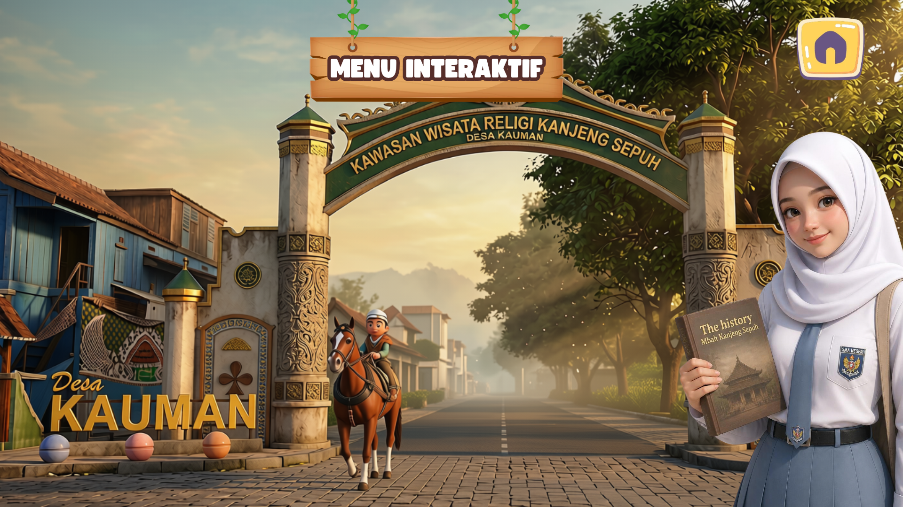
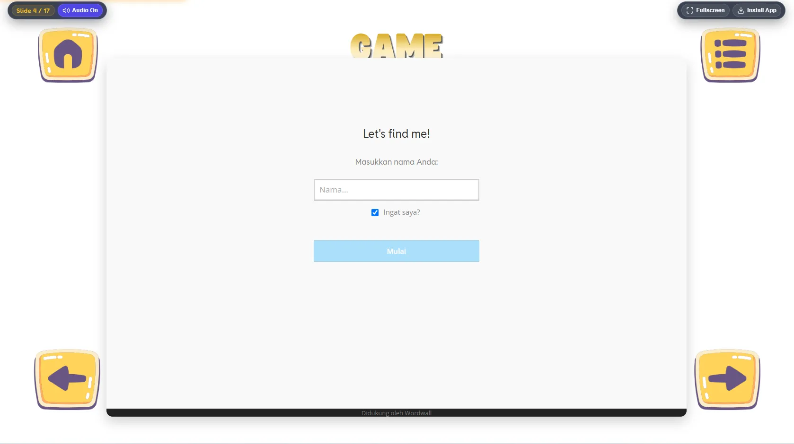
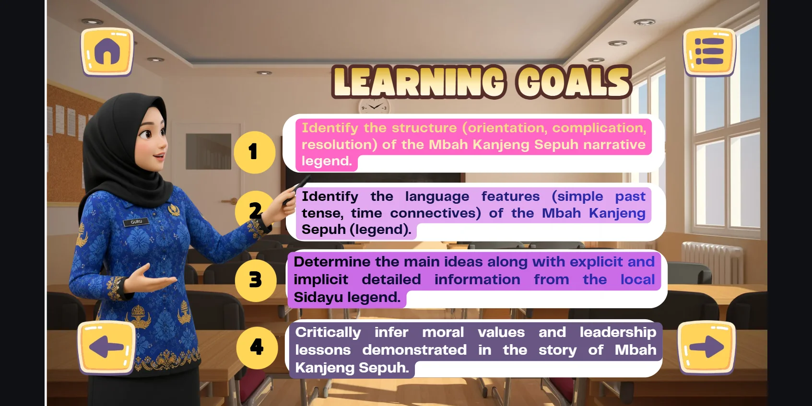
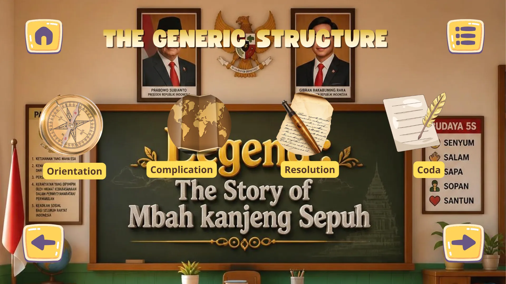
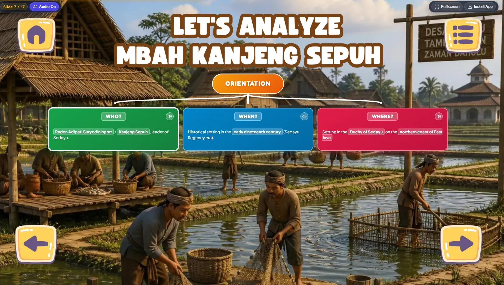

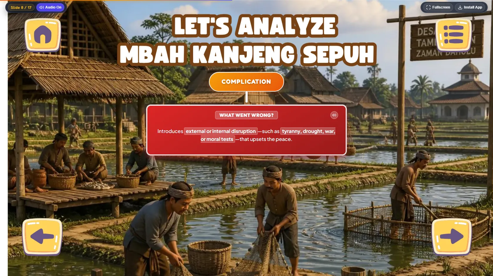
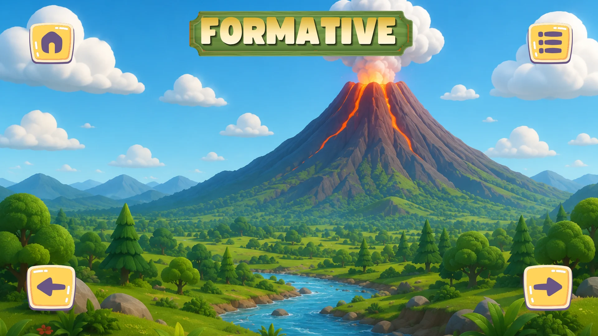
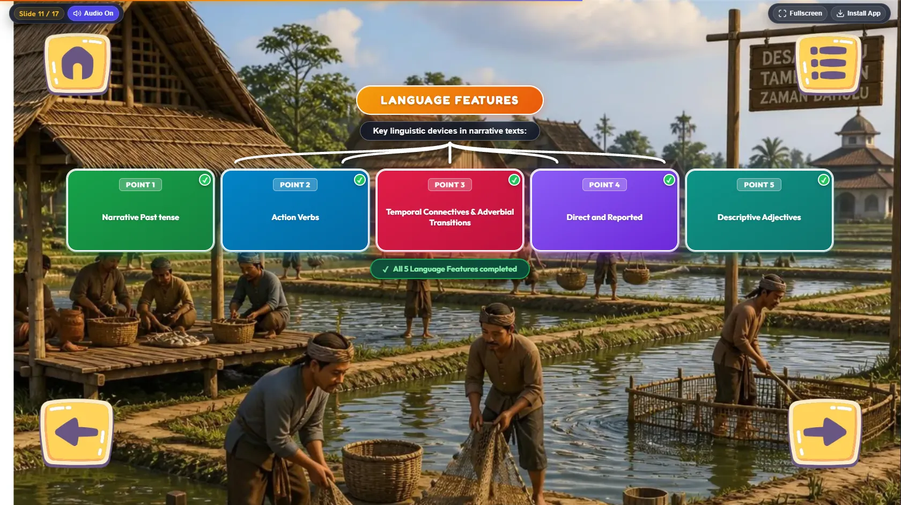
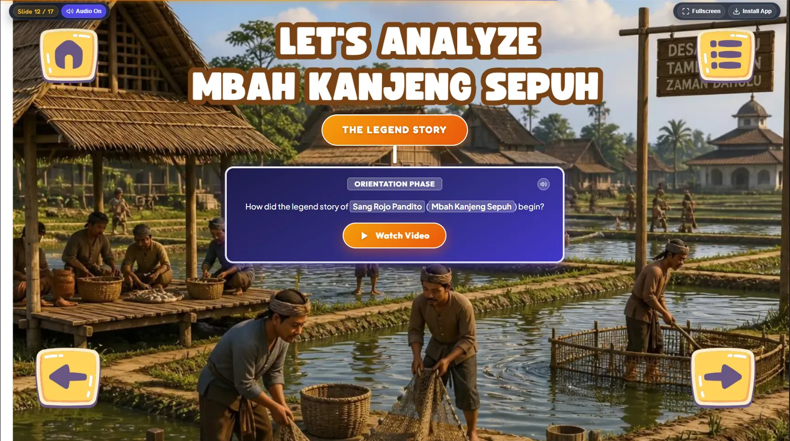
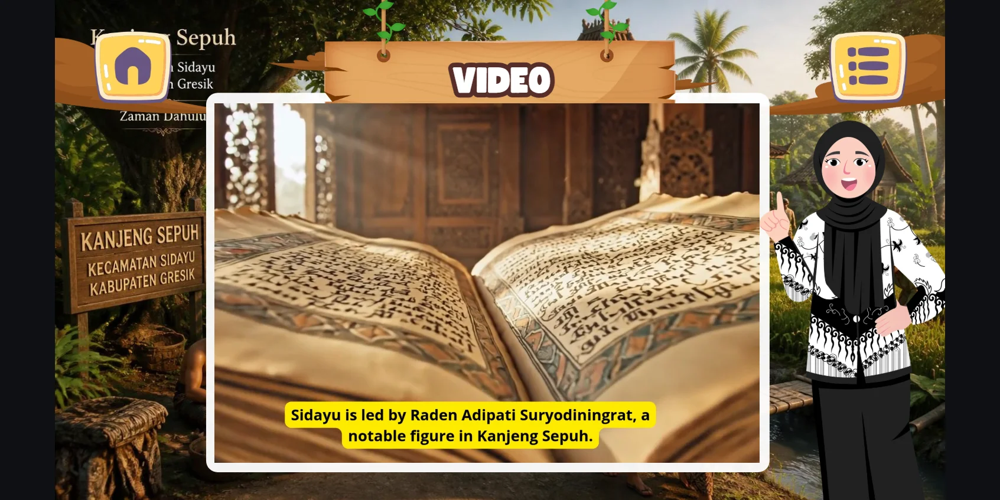
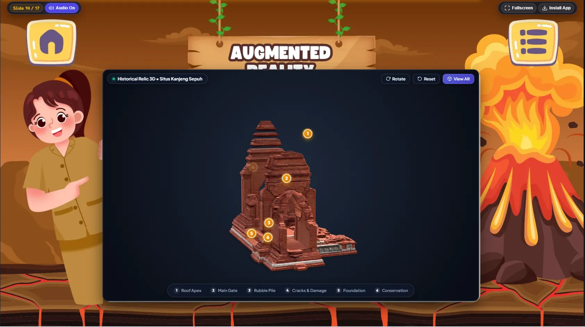
Materi Pengayaan
Karakteristik & Manfaat Vulkanik
1
Magma & Lava: Magma tersimpan panas di dalam kerak bumi; setelah keluar ke permukaan lereng gunung disebut Lava.
2
Tanah Subur: Endapan abu vulkanik kaya unsur hara mineral penting yang menyuburkan lahan pertanian rakyat.
3
Energi Geotermal: Uap panas bumi dari sistem vulkanik dimanfaatkan sebagai pembangkit energi ramah lingkungan.
4
Mitigasi Bencana: Memahami arah luncuran awan panas dan mematuhi peta jalur evakuasi saat status siaga erupsi.
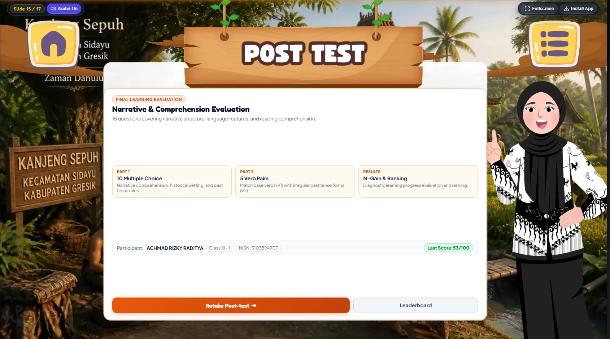
Evaluasi Akhir
Pilihan Ganda
Soal 1 dari 15
-
Memuat pertanyaan post-test...
Ketuk satu kartu di kolom kiri, lalu ketuk pasangannya di kolom kanan.
Premis / Konsep
Pasangan Target
Terpasang: 0 / 4 Pasangan
Pilih salah satu jawaban untuk melanjutkan.
Evaluasi Akhir Selesai
Hasil Evaluasi & Papan Peringkat
Selamat! Anda telah menyelesaikan seluruh rangkaian evaluasi materi Mbah Kanjeng Sepuh & Vulkanologi.
- • Kelas - (NISN: -)
Skor Akhir Post-test
0 / 100
Pilihan Ganda: 0 / 10 • Mencocokkan: 0 / 5
Nilai Pretest
-
Nilai Post-test
-
Peningkatan (+Δ)
+0
N-Gain Score
0.00
Rendah
Analisis Efektivitas Pembelajaran (Hake's N-Gain)
Sedang
Peningkatan pemahaman materi tergolong efektif berdasarkan perbandingan skor pretest dan post-test.
< 0.30 (Rendah)
0.30 - 0.70 (Sedang)
≥ 0.70 (Tinggi)
Posisi Anda: Peringkat -
Rata-rata: -
Tertinggi: -
| Peringkat | Nama Siswa | Pretest | Post-test | Peningkatan (+Δ) | N-Gain |
|---|
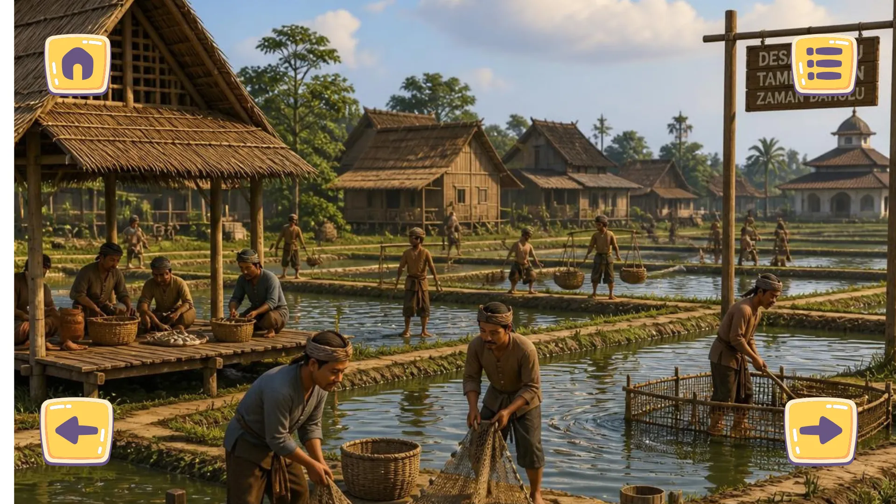
Judul Info
Tahap
Deskripsi detail.
Contoh
Pemberitahuan